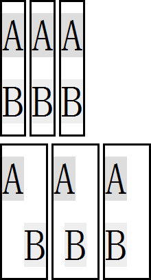

HT1003: Chrome 和 Safari 中 BR 元素前的空白符不会被忽略
作者：陆远
标准参考
W3C 规定 "ASCII 空格" 、 "ASCII 制表符" 、 "ASCII 换行符" 等属于空白符（white space），对于多个连续的空白符，浏览器将对他们进行合并。
BR 元素会在当前行强制插入一个换行符，这个换行符也是空白符的一种。 HTML 规范中并没有明确规定 BR 元素前后出现的空白符应如何处理。
关于 空白符 的详细信息，请参考 HTML4.01 规范 9.1 及 9.3.2 中的内容。
问题描述
Chrome 和 Safari 中 BR 元素前的空白符不会被忽略，多余的空白符将被压缩为一个空白符并渲染到 BR 元素之前的行中。
造成的影响
这个现象可能造成在 Chrome 和 Safari 中出现多余空白符占有位置，从而影响到容器的宽度或者行内元素的对齐效果。
受影响的浏览器
| Chrome Safari |
|---|
问题分析
分析以下代码：
<style>
p { margin:0; float:left; margin-right:5px; border:3px solid black; font:64px/1.5 Simsun; }
</style>
<div style="zoom:1; overflow:hidden;">
<p style="text-align:right;">
<span style="background:#ddd;">A</span><br /><span style="background:#eee;">B</span>
</p>
<p style="text-align:center;">
<span style="background:#ddd;">A</span><br /><span style="background:#eee;">B</span>
</p>
<p style="text-align:left;">
<span style="background:#ddd;">A</span><br /><span style="background:#eee;">B</span>
</p>
</div>
<div style="zoom:1; overflow:hidden; margin-top:10px;">
<p style="text-align:right;">
<span style="background:#ddd;">A</span> <br /><span style="background:#eee;">B</span>
</p>
<p style="text-align:center;">
<span style="background:#ddd;">A</span> <br /><span style="background:#eee;">B</span>
</p>
<p style="text-align:left;">
<span style="background:#ddd;">A</span> <br /><span style="background:#eee;">B</span>
</p>
</div>
测试代码分为上下两组，每组均有三个 P 元素，其中依次包含一个 SPAN 元素、一个 BR 元素、一个 SPAN 元素。三个 P 元素分别设置了文本居左对齐、居中对齐、居左对齐。
两组的区别为第二组中 BR 元素之前存在空白符。
这段代码在各浏览器中效果为：
| IE6 IE7 IE8 Firefox Opera | Chrome Safari |
|---|---|
 |
 |
从截图中可见，Chrome Safari 没有忽略 BR 元素之前的空白符。而 其他浏览器 则将其忽略。
下面这组代码可以更清晰的展现这个现象：
<style>
p { margin:0; float:left; margin-right:5px; border:3px solid black; font:64px/1.5 Simsun; }
</style>
<div style="zoom:1; overflow:hidden; margin-top:10px;">
<p id="p" style="text-align:right;">
<span style="background:#ddd;">TEXT_A</span> <br /><span style="background:#eee;">TEXT_B</span>
</p>
</div>
<script>
var p = document.getElementById('p'), k = 300;
setInterval(function () {
p.style.width = k-- + 'px';
(k < 150) && (k = 300);
}, 20);
</script>
上面代码动态的调整容器【p】的宽度，通过动画可以看到仅当容器的宽度不够容纳子元素时，Chrome Safari 才会忽略 BR 元素之前的空白符。

解决方案
删除 BR 元素之前多余的空白符。
参见
知识库
相关问题
测试环境
| 操作系统版本: | Windows 7 Ultimate build 7600 |
|---|---|
| 浏览器版本: |
IE6 IE7 IE8 Firefox 3.6.8 Chrome 6.0.472.0 dev Safari 5.0 Opera 10.60 |
| 测试页面: | space_before_br.html br_ani.html |
| 本文更新时间: | 2010-07-28 |
关键字
BR break empty white space 空白符 对齐 换行